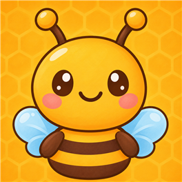

Bee Colony Idle
Support · Português
Bee Colony Idle is a cozy idle game by Bruno Heusi. Grow a tiny hive into a honey empire, hire bee captains, cook for the forest neighbours and travel through five meadows. It has no ads.
Contact
A question, a bug, or a purchase that did not arrive? Write to:
It helps to say which device you play on, its system version, and what happened just before the problem.
Common questions
Where is my hive saved?
On your device. The game saves by itself as you play. Removing the game from your device removes the save with it.
I bought something and it is missing. What do I do?
Open the Shop (the last button at the bottom of the screen), scroll to the end and tap "Restore purchases". This brings back everything that is kept forever: Queen's Blessings, the Everbloom Charm and the packs. Amber, the Honey Pot, the Blossom Pass and festival bundles are used when you buy them, so they are not restored. If something is still missing, write to the address above.
Do I have to buy anything?
No. Every purchase is optional, nothing in the Shop is random, and everything can also be earned by playing.
Does the game need the internet or an account?
No. It plays offline and has no account, no sign-in and no ads. Only buying something in the Shop needs a connection, because Apple handles the payment.
Do my bees work while the game is closed?
Yes. Your captains keep gathering for a few hours while you are away, and the honey is waiting when you come back.
Can I change the language or the sound?
Yes. Tap the gear button on the picture at the top of the screen. The game is in English and Brazilian Portuguese.
How do I start over?
Tap the gear button, then "Start over". This erases your progress on the device and cannot be undone. Purchases that are kept forever can be restored from the Shop afterwards.
How do I get a refund?
Apple handles purchases and refunds: reportaproblem.apple.com.
Privacy
The game collects no personal data. The full text is in the privacy policy.
Suporte (Português)
Bee Colony Idle é um jogo idle aconchegante de Bruno Heusi. Transforme uma colmeia pequenina em um império do mel, contrate capitãs, cozinhe para os vizinhos da floresta e viaje por cinco campinas. Sem anúncios.
Uma dúvida, um erro ou uma compra que não chegou? Escreva para:
Ajuda dizer em qual aparelho você joga, a versão do sistema e o que aconteceu logo antes do problema.
Onde minha colmeia fica salva?
No seu aparelho. O jogo salva sozinho enquanto você joga. Apagar o jogo do aparelho apaga também o progresso.
Comprei algo e não apareceu. O que eu faço?
Abra a Loja (o último botão na parte de baixo da tela), role até o fim e toque em "Restaurar compras". Isso traz de volta tudo o que é para sempre: as Bênçãos da Rainha, o Amuleto da Florada Eterna e os pacotes. Âmbar, o Pote de Mel, o Passe das Flores e os pacotes de festival são usados na hora da compra e por isso não são restaurados. Se ainda faltar algo, escreva para o endereço acima.
Preciso comprar alguma coisa?
Não. Toda compra é opcional, nada na Loja é aleatório e tudo também pode ser conquistado jogando.
O jogo precisa de internet ou de conta?
Não. Ele funciona offline e não tem conta, login nem anúncios. Só as compras na Loja precisam de conexão, porque a Apple cuida do pagamento.
As abelhas trabalham com o jogo fechado?
Sim. Suas capitãs continuam colhendo por algumas horas enquanto você está fora, e o mel fica esperando a sua volta.
Posso mudar o idioma ou o som?
Sim. Toque no botão de engrenagem na imagem do topo da tela. O jogo está em português do Brasil e em inglês.
Como recomeçar do zero?
Toque na engrenagem e depois em "Recomeçar". Isso apaga o progresso no aparelho e não pode ser desfeito. As compras que são para sempre podem ser restauradas na Loja depois.
Como pedir reembolso?
A Apple cuida das compras e dos reembolsos: reportaproblem.apple.com.
O jogo não coleta dados pessoais. O texto completo está na política de privacidade.